¡Bienvenidos a la discografía de MEGADETH!
Aquí encontrarás la historia musical completa de Megadeth ordenada cronológicamente, desde su nacimiento en 1985 hasta la actualidad.
En esta sección repasamos todos los álbumes de estudio de la banda, uno por uno, con:
- Fecha de lanzamiento
- Formacion de la banda en ese momento
- La historia detras de cada disco
- Tracklist completo

Killing Is My Business... And Business Is Good!
Es el álbum debut de Megadeth, lanzado el 12 de junio de 1985 por el sello independiente Combat Records.
Dave Mustaine, recién expulsado de Metallica en 1983 por problemas de drogas, alcohol y conflictos personales, formó Megadeth junto a David Ellefson (bajo) con la clara intención de crear una banda más rápida, pesada y técnica que su ex-banda. “Quería sangre. La de ellos. Quería ser más rápido y más pesado que Metallica”, dijo Mustaine.
La formación clásica del disco incluyó a Chris Poland (guitarra) y Gar Samuelson (batería), quienes aportaron un toque jazzístico al thrash. Grabado entre diciembre de 1984 y enero de 1985 en estudios de Malibu y Hollywood, el álbum es puro thrash speed metal crudo, agresivo y veloz, con temas de muerte, violencia y ocultismo. Incluye la famosa versión acelerada de “Mechanix” (canción que Mustaine había escrito para Metallica y que ellos convirtieron en la más lenta “The Four Horsemen”).
A pesar de su producción rudimentaria, el disco ayudó a consolidar el thrash metal como subgénero y sentó las bases del sonido de Megadeth.
Curiosidades del album:
- Presupuesto caótico: Combat Records les dio $8.000 (luego sumaron $4.000 más). La banda gastó más de la mitad en drogas (cocaína y heroína), alcohol y comida. Terminaron despidiendo al productor original y produciendo ellos mismos con el ingeniero Karat Faye.
- La portada que conocemos (con la calavera de plástico y papel aluminio) no era la original. Mustaine había dibujado a Vic Rattlehead (el mascota de la banda) con los ojos, oídos y boca tapados (inspirado en los tres monos sabios). El sello perdió el arte y puso esa versión barata y amateur. La banda quedó horrorizada.
- Mustaine casi no canta en el disco: buscaron vocalista durante meses. Despidieron a uno porque se presentó con maquillaje y eyeliner (demasiado glam para Megadeth). Al final, Ellefson convenció a Dave de cantar él mismo, naciendo así su característico estilo vocal.
- Incluye una versión polémica y pervertida del clásico “These Boots Are Made for Walkin'” de Nancy Sinatra, que el compositor original (Lee Hazlewood) odió tanto que amenazó con demandarlos. La quitaron de reediciones posteriores.
- El título del álbum surgió mientras miraban artículos en una tienda de excedentes del ejército.

Peace Sells... But Who's Buying?
Es el segundo álbum de estudio de Megadeth, lanzado el 19/25 de septiembre de 1986 por Capitol Records (después de que el sello comprara el contrato de la banda a Combat Records).
Grabado entre febrero y marzo de 1986 en Los Ángeles (principalmente en Music Grinder Studios), con un presupuesto de $25.000. Mustaine lo co-produjo con Randy Burns, pero Capitol contrató a Paul Lani para hacer un remix final que le diera más claridad y potencia al sonido.
Con la misma formación que el debut (Dave Mustaine en voz y guitarra, David Ellefson en bajo, Chris Poland en guitarra y Gar Samuelson en batería), el disco representa un gran salto en calidad: riffs más complejos, influencias de jazz/fusión (gracias a Poland y Samuelson), producción más profesional y letras cargadas de cinismo político, crítica social y rabia personal.
Fue el álbum de breakthrough de la banda: los consolidó como uno de los líderes del thrash metal, alcanzó el puesto #76 en Billboard y temas como “Peace Sells” (con su icónico intro de bajo) y “Wake Up Dead” se volvieron himnos.
Curiosidades del album:
- Condiciones extremas: Mustaine y Ellefson vivían prácticamente en la pobreza (casi sin hogar) y ensayaban en un local llamado “The Loft”. Mustaine escribió las letras de “Peace Sells” directamente en la pared del estudio porque no tenía papel.
- Portada legendaria: Creada por Ed Repka (quien luego haría más arte para Megadeth). Muestra a Vic Rattlehead como agente inmobiliario vendiendo las ruinas de la sede de la ONU destruida tras un holocausto nuclear. La idea surgió mientras Mustaine almorzaba frente al edificio real de la ONU. El título del álbum proviene de un artículo que Mustaine leyó: “Peace sells, but nobody's buying”.
- Éxito inesperado: El bajo intro de “Peace Sells” se usó durante años como tema de apertura de MTV News, aunque la banda nunca recibió regalías por eso.
- Es considerado por muchos fans como uno de los mejores álbumes de thrash de la historia, junto a Master of Puppets y Reign in Blood (ambos también de 1986).

So Far, So Good... So What!
Es el tercer álbum de estudio de Megadeth, lanzado el 19 de enero de 1988 por Capitol Records. Tras el éxito de Peace Sells, la banda sufrió una fuerte inestabilidad: Dave Mustaine despidió al guitarrista Chris Poland y al baterista Gar Samuelson por problemas graves de drogas y comportamiento disruptivo (incluyendo pignorar equipo de la banda para comprar heroína).
Se incorporaron rápidamente el guitarrista Jeff Young y el baterista Chuck Behler (ex técnico de batería de Samuelson). Este fue el único álbum grabado con esta formación.
Grabado en 1987 en Music Grinder Studios (Los Ángeles), el disco mantiene la velocidad y técnica del thrash, pero con un sonido más crudo y apresurado. Incluye temas potentes como “Set the World Afire” (una de las primeras canciones que escribió Mustaine tras ser echado de Metallica), “In My Darkest Hour” (escrita en homenaje a Cliff Burton tras su muerte), “502”, “Mary Jane” y una versión de “Anarchy in the U.K.” de los Sex Pistols.
A pesar de los problemas internos y la producción cuestionada, el álbum vendió bien (alcanzó el #28 en EE.UU. y #18 en UK) y ayudó a elevar el perfil de la banda.
Curiosidades del album:
- Caos total en la banda: Mustaine estaba muy metido en las drogas durante la grabación. La portada muestra a Vic Rattlehead con un uniforme militar, pero muchos fans la consideran una de las menos logradas de la discografía.
- “In My Darkest Hour”: Escrita por Mustaine poco después de la muerte de Cliff Burton (bajista de Metallica). Es una de las canciones más emotivas y queridas de la banda.
- “Liar”: Mustaine la escribió directamente contra Chris Poland, acusándolo de robar y vender guitarras de la banda para comprar drogas.
- Poco después de la gira del álbum, tanto Jeff Young como Chuck Behler fueron despedidos. Esto abrió la puerta a la llegada de Marty Friedman y Nick Menza, que llevarían a Megadeth a su era más exitosa con Rust in Peace.

Rust In Peace
Es el cuarto álbum de estudio de Megadeth, lanzado el 24 de septiembre de 1990 por Capitol Records. Después del caos y la inestabilidad de So Far, So Good... So What!, Mustaine armó lo que muchos consideran la formación clásica de la banda: Dave Mustaine (voz y guitarra), David Ellefson (bajo), Marty Friedman (guitarra) y Nick Menza (batería). Este fue el primer disco con Friedman y Menza.
Grabado entre 1989 y 1990 en Rumbo Recorders (Canoga Park, California), con Mike Clink como productor (famoso por trabajar con Guns N' Roses). A diferencia de álbumes anteriores, la grabación fue más estable y profesional, sin tantos cambios de productor a mitad de camino.
El disco es una obra maestra del thrash metal técnico: riffs ultrarrápidos, cambios de tiempo complejos, solos brillantes de Friedman y una producción potente. Las letras abordan temas como guerras religiosas, conspiraciones extraterrestres, política nuclear y adicciones. Temas destacados: “Holy Wars... The Punishment Due”, “Hangar 18”, “Tornado of Souls”, “Rust in Peace... Polaris” y “Five Magics”.
Fue un éxito comercial (llegó al #23 en Billboard 200 y #8 en UK), recibió una nominación al Grammy y es considerado por muchos como uno de los mejores álbumes de thrash metal de todos los tiempos.
Curiosidades del album:
- Título inspirado en un bumper sticker: Mustaine vio en la carretera un adhesivo que decía “May all your nuclear weapons rust in peace” (Que todas tus armas nucleares se oxiden en paz). Le pareció una frase profunda y lo convirtió en el título del disco.
- Marty Friedman casi no entra: Mustaine recibió una cinta de Marty (del álbum Dragon's Kiss) y al ver la portada con pelo largo y estilo “posero” la tiró diciendo “What a clown”. Luego escuchó la música y quedó impresionado con su técnica.
- Portada icónica: Creada por Ed Repka. Muestra a Vic Rattlehead dentro del Hangar 18, sosteniendo un objeto brillante sobre un alienígena preservado, mientras líderes mundiales (Bush, Gorbachev, etc.) observan.
- Estabilidad relativa: Fue el primer álbum de Megadeth sin despidos masivos durante o inmediatamente después de la grabación. Esta formación duraría varios años y lanzaría los discos más exitosos de la banda.

Countdown To Extinction
Es el quinto álbum de estudio de Megadeth, lanzado el 14 de julio de 1992 por Capitol Records.Con la misma formación clásica (Dave Mustaine, Marty Friedman, David Ellefson y Nick Menza), este disco representa el punto más comercial y exitoso de la banda hasta ese momento. Fue producido por Dave Mustaine junto a Max Norman (productor conocido por su trabajo con Ozzy Osbourne).
Grabado entre enero y abril de 1992 en The Enterprise Studios (Burbank, California), el álbum tiene un sonido más pulido, con estructuras de canciones más accesibles, pero sin perder la agresividad del thrash. Temas destacados incluyen “Symphony of Destruction” (uno de los mayores hits de la banda), “Sweating Bullets”, “Skin o' My Teeth”, “This Was My Life” y la canción titular.
Countdown to Extinction es el álbum más vendido de Megadeth (más de 2 millones de copias solo en EE.UU., doble platino). Debutó en el puesto #2 del Billboard 200 (solo detrás de Achy Breaky Heart de Billy Ray Cyrus) y recibió una nominación al Grammy como Best Metal Performance.
Curiosidades del album:
- Sobriedad total: Fue el primer álbum que Dave Mustaine grabó completamente “stone sober” (sin drogas ni alcohol), después de años de adicciones. Mustaine lo consideró un logro importante.
- Grabado durante los disturbios de Los Ángeles 1992: Las sesiones coincidieron con los famosos riots de LA tras el caso Rodney King. La banda grababa mientras la ciudad ardía.
- “Symphony of Destruction”: Inspirada en un documental de la Segunda Guerra Mundial, la película The Manchurian Candidate y un incidente en gira con Stone Temple Pilots.
- Título track: Habla sobre la extinción de especies y temas ambientales. Ganó el Genesis Award de la Humane Society (Megadeth es la única banda de metal que lo ha recibido).

Youthanasia
Es el sexto álbum de estudio de Megadeth, lanzado el 1 de noviembre de 1994 por Capitol Records.Con la misma formación clásica (Dave Mustaine, Marty Friedman, David Ellefson y Nick Menza), este disco continúa la tendencia más melódica y accesible iniciada en Countdown to Extinction. Fue producido nuevamente por Max Norman y grabado en Phoenix, Arizona (donde Mustaine se mudó con su familia para mantenerse sobrio).
El sonido es más pesado y mid-tempo, con menos velocidad thrash y mayor énfasis en riffs potentes, melodías vocales y armonías entre Mustaine y Friedman. Temas destacados: “Reckoning Day”, “Train of Consequences”, “À Tout le Monde” (uno de los mayores hits de la banda, con coro en francés), “Addicted to Chaos”, “Elysian Fields” y la canción titular.
El álbum debutó en el puesto #4 del Billboard 200, fue certificado platino en EE.UU. (más de 1 millón de copias) y consolidó el éxito comercial de Megadeth en los 90, aunque algunos fans old-school lo criticaron por sonar “demasiado pulido”.
Curiosidades del album:
- Título y concepto: “Youthanasia” es un juego de palabras entre “youth” (juventud) y “euthanasia” (eutanasia). Mustaine criticaba cómo la sociedad estaba “eutanasando” (matando lentamente) a su juventud a través de la violencia, las drogas y los medios.
- Portada impactante: Creada por Hugh Syme. Muestra a una anciana colgando bebés por los pies en una interminable cuerda de tender ropa. La imagen está inspirada directamente en una frase de la canción título: “We've been hung out to dry” (Nos han dejado colgando para secar).
- Estabilidad y terapia: Fue el tercer álbum consecutivo con la misma formación (la más larga y exitosa de la banda). Durante la composición, los miembros tuvieron tensiones, por lo que hicieron sesiones de terapia grupal para mantener la paz.
- Producción particular: Max Norman pidió que todas las canciones tuvieran un tempo similar para que el álbum fluyera mejor, lo que le da un feeling más uniforme (aunque algunos fans lo encuentran menos dinámico).
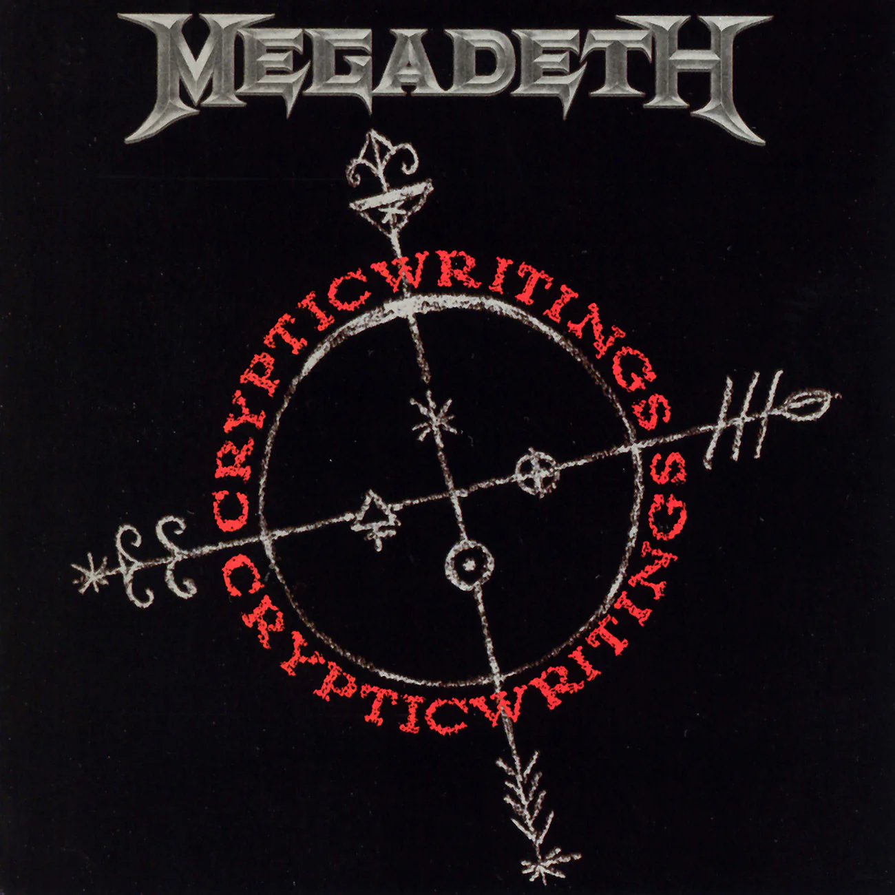
Cryptic Writings
Es el séptimo álbum de estudio de Megadeth, lanzado el 17 de junio de 1997 por Capitol Records. Con la misma formación clásica (Dave Mustaine, Marty Friedman, David Ellefson y Nick Menza), este disco marca un cambio aún más marcado hacia un sonido más comercial y radio-friendly. Fue producido por Dann Huff (conocido por su trabajo con bandas de hard rock y country), quien impulsó a la banda a escribir canciones más cortas, con coros pegajosos y estructuras más accesibles.
Grabado entre 1996 y 1997, el álbum mezcla thrash melódico con hard rock, power ballads y algunos riffs pesados. Temas destacados incluyen “Trust” (el mayor hit del disco y uno de los más grandes de la banda), “Almost Honest”, “Use the Man”, “Secret Place” y “She-Wolf”.
Cryptic Writings debutó en el puesto #10 del Billboard 200 y fue certificado oro en EE.UU. “Trust” llegó al #1 en la lista de Mainstream Rock Tracks de Billboard, lo que ayudó a que la banda mantuviera presencia en la radio.
Curiosidades del album:
- Crisis creativa: Mustaine admitió que en esa época tenía dificultades para componer y que Dann Huff lo presionaba mucho para que escribiera “hits” en lugar de canciones complejas. Esto generó tensiones internas.
- Portada minimalista: Muestra solo el logo de Megadeth con un fondo negro y el título en letras doradas. Es una de las portadas más simples de su discografía.
- Último álbum con esta formación: Poco después de la gira de Cryptic Writings, Marty Friedman anunció su salida de la banda en 1999 (por diferencias musicales y querer explorar otros estilos). Nick Menza también se iría más tarde. Este disco cierra la era dorada de la formación clásica de los 90.
- “Trust”: El video musical es uno de los más rotados de la banda en MTV durante esa época.
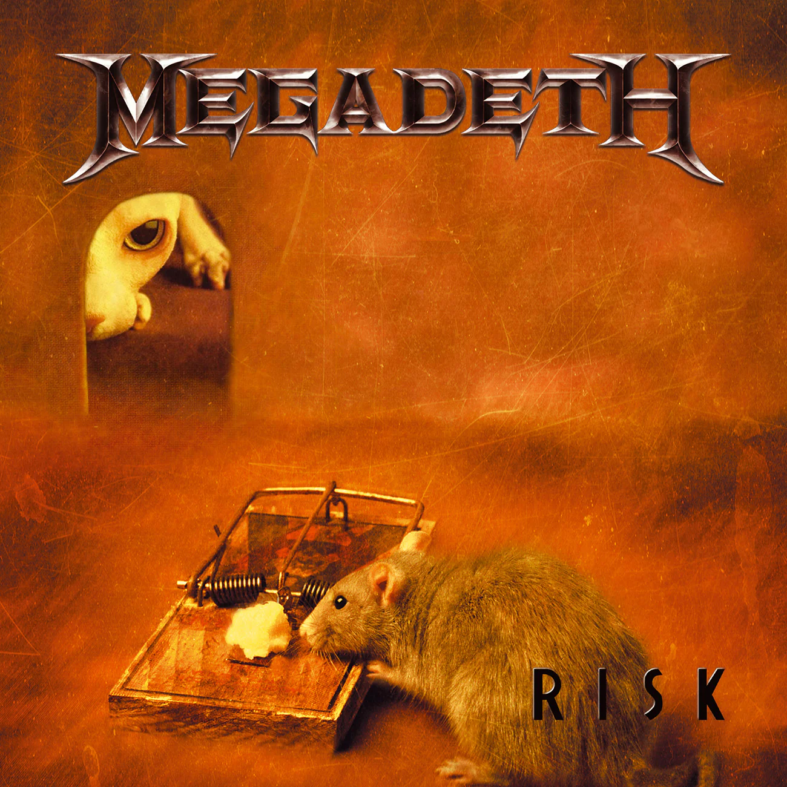
Risk
Es el octavo álbum de estudio de Megadeth, lanzado el 31 de agosto de 1999 por Capitol Records.Este es, sin duda, el álbum más controvertido y criticado de toda la discografía de Megadeth. Con la misma formación de los 90 (Dave Mustaine, Marty Friedman, David Ellefson y Nick Menza), fue producido nuevamente por Dann Huff.
Mustaine y la banda intentaron dar un giro radical hacia un sonido más moderno, industrial y accesible, influenciado por bandas como Nine Inch Nails y el nu-metal que dominaba la escena en esa época. El resultado es un disco con guitarras afinadas bajas, grooves electrónicos, baterías programadas en algunas partes y coros muy comerciales.
Temas destacados: “Crush 'Em” (que fue usada como tema de entrada por la WCW en la lucha libre), “Breadline”, “Insomnia” y “Prince of Darkness”. El álbum debutó en el puesto #16 del Billboard 200, pero fue un fracaso comercial comparado con sus antecesores y recibió duras críticas de fans y prensa especializada, que lo acusaron de traicionar el espíritu thrash de la banda.
Curiosidades del album:
- Título “Risk”: Mustaine dijo que el nombre reflejaba el gran riesgo que estaban tomando al cambiar tan drásticamente su sonido.
- Marty Friedman casi no participa: Friedman estaba muy desmotivado y casi no aportó composiciones. Este sería su último álbum con Megadeth. Lo abandonó en 1999, poco después del lanzamiento.
- “Crush 'Em”: La canción fue un éxito en el mundo de la lucha libre profesional. Fue usada por Diamond Dallas Page en la WCW y también apareció en la película Ready to Rumble.
- Arrepentimiento posterior: Con el paso de los años, Dave Mustaine ha admitido públicamente que Risk fue un error y que se dejó presionar demasiado por la discográfica para sonar “moderno”. En varias entrevistas ha dicho que este es el único álbum del que se arrepiente.
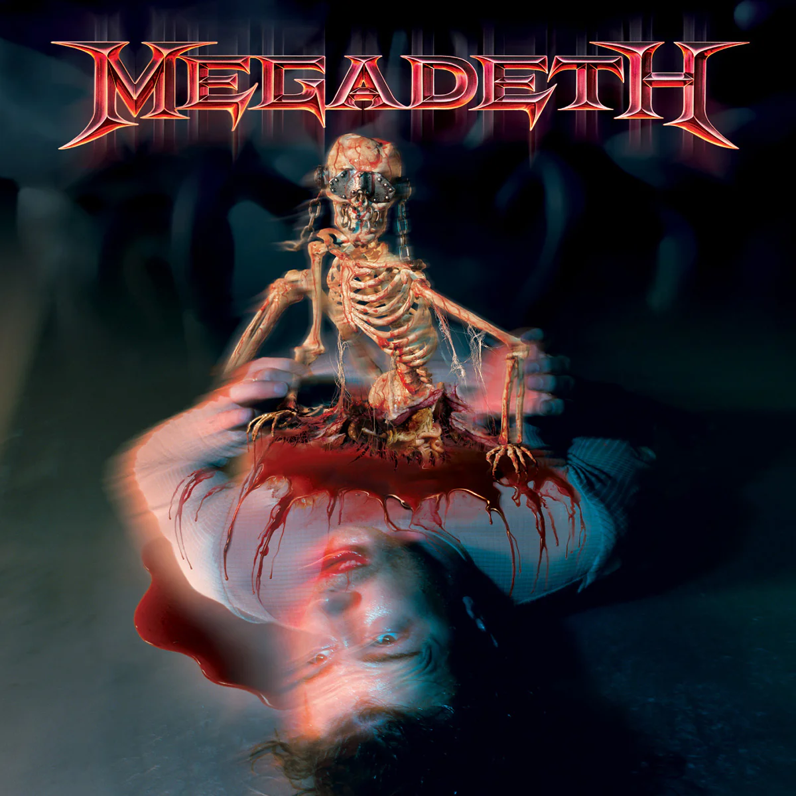
The World Needs a Hero
Es el noveno álbum de estudio de Megadeth, lanzado el 15 de mayo de 2001 por Sanctuary Records. Después del fracaso crítico y comercial de Risk, Dave Mustaine decidió regresar a las raíces thrash de la banda. Este disco marca un intento claro de redención. Fue el primer álbum sin Marty Friedman (quien había dejado la banda en 1999). En su lugar entró el guitarrista Al Pitrelli (ex-Savatage y Trans-Siberian Orchestra).
La formación en este disco fue: Dave Mustaine (voz y guitarra), David Ellefson (bajo), Al Pitrelli (guitarra) y Nick Menza (batería). Sin embargo, Nick Menza fue despedido durante las sesiones de grabación por problemas de espalda y fue reemplazado por Jimmy DeGrasso (ex-Suicidal Tendencies y White Lion), quien terminó grabando casi todo el álbum.
Producido por Dave Mustaine y Bill Kennedy, el sonido es más pesado, agresivo y cercano al thrash clásico, aunque todavía conserva algunos toques melódicos de los 90. Temas destacados: “The World Needs a Hero”, “Dread & the Fugitive Mind”, “Return to Hangar” (secuela de “Hangar 18”), “Silent Scorn” y “Moto Psycho”. El álbum debutó en el puesto #16 del Billboard 200. Recibió críticas mixtas: los fans lo celebraron como un regreso a un sonido más auténtico, pero muchos lo consideraron todavía irregular.
Curiosidades del album:
- Regreso a las raíces: Mustaine declaró que quería hacer “el anti-Risk”. Este disco fue una respuesta directa al odio que recibió el álbum anterior.
- “Return to Hangar”: Es la continuación directa de la historia de “Hangar 18” del álbum Rust in Peace.
- Último álbum con David Ellefson (por mucho tiempo): Ellefson abandonaría la banda poco después debido a conflictos personales y legales con Mustaine. No regresaría hasta 2010.
- Problemas de salud: Nick Menza fue despedido durante la grabación. Jimmy DeGrasso entró de urgencia y terminó siendo el baterista oficial por varios años.
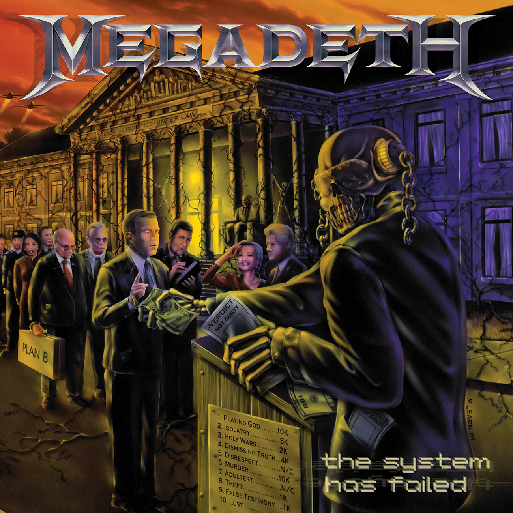
The system has failed
Es el décimo álbum de estudio de Megadeth, lanzado el 14 de septiembre de 2004 por Sanctuary Records. Este disco tiene una historia muy especial: Dave Mustaine había anunciado en 2002 que Megadeth se disolvía después de problemas graves de lesiones en el brazo y cuello que le impedían tocar la guitarra. Sin embargo, tras una exitosa operación y rehabilitación, Mustaine decidió revivir la banda como un proyecto casi en solitario.
The System Has Failed fue grabado con músicos de sesión y no con una formación fija. Los únicos miembros “oficiales” fueron Dave Mustaine (voz y guitarra) y el baterista Jimmy DeGrasso. En guitarra lider invitó a Chris Poland (guitarrista del debut y Peace Sells), y en bajo participó Jimmie Lee Sloas.
Producido por Dave Mustaine y Jeff Balding, el álbum marca un fuerte regreso al thrash metal con toques progresivos y melódicos. Temas destacados: “Die Dead Enough”, “Kick the Chair”, “The Scorpion”, “Tears in a Vial”, “Back in the Day” y la poderosa “My Kingdom Come”. El disco debutó en el puesto #18 del Billboard 200 y fue muy bien recibido por los fans, que lo celebraron como el verdadero regreso de Megadeth después de los tropiezos de finales de los 90.
Curiosidades del album:
- Casi un álbum solista: Mustaine compuso casi todo el material solo. Por eso muchos lo consideran su disco más personal desde Rust in Peace.
- Reunión temporal: La participación de Chris Poland generó mucha expectativa. Fue la primera vez que tocaba con Mustaine en casi 20 años.
- Último álbum con Jimmy DeGrasso: Poco después, Mustaine armó una nueva formación estable con Shawn Drover (batería) y Glen Drover (guitarra).
- Regreso triunfal: Este álbum inició la segunda etapa de Megadeth y demostró que la banda todavía tenía mucho que decir en el metal.
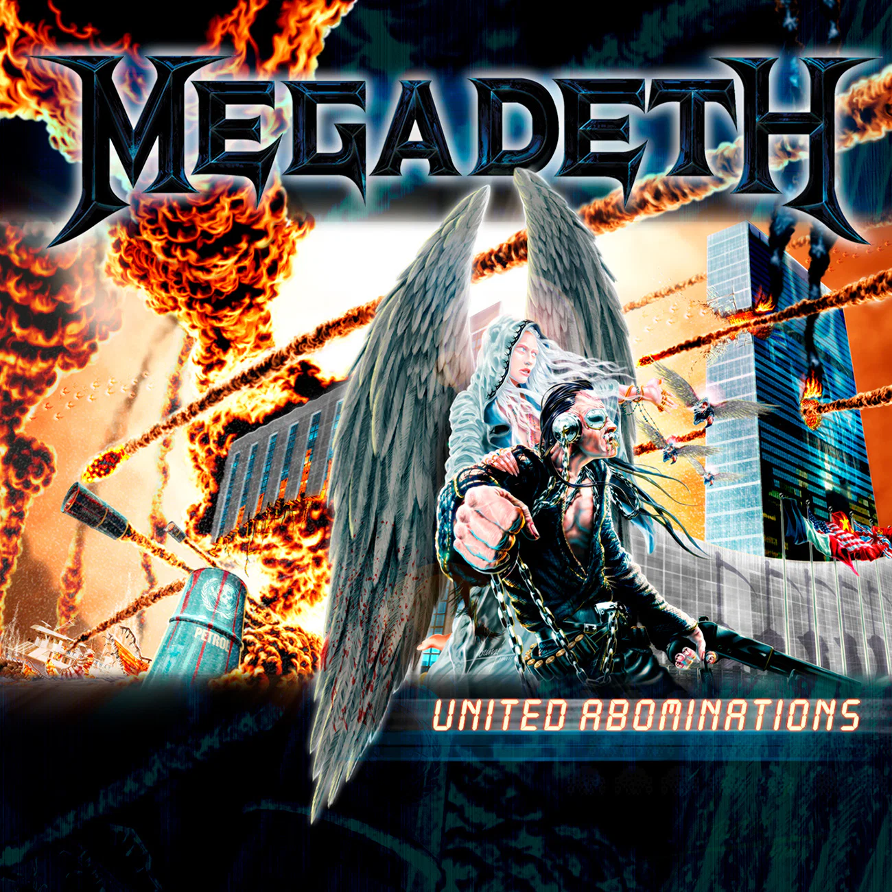
United Abominations
Es el undécimo álbum de estudio de Megadeth, lanzado el 15 de mayo de 2007 por Roadrunner Records. Este disco marca la primera grabación con la nueva formación estable que Mustaine armó tras The System Has Failed: Dave Mustaine (voz y guitarra), Glen Drover (guitarra), Shawn Drover (batería) y James LoMenzo (bajo).
Producido por Dave Mustaine y Andy Sneap (reconocido por su trabajo con Testament, Arch Enemy y Judas Priest), el álbum representa un regreso fuerte y agresivo al thrash metal. Tiene un sonido más moderno, pesado y técnico, con riffs rápidos y mucha agresividad.
Temas destacados: “Washington Is on Fire”, “Never Walk Alone… A Call to Arms”, “Guns, Drugs & Money”, “Sleepwalker” y “A Tout le Monde (Set Me Free)” (nueva versión de la clásica “À Tout le Monde” con Cristina Scabbia de Lacuna Coil como invitada). El álbum debutó en el puesto #8 del Billboard 200 (la mejor posición de Megadeth desde Youthanasia), fue muy bien recibido por la crítica y los fans, y demostró que la banda estaba de vuelta en forma.
Curiosidades del album:
- Crítica política fuerte: Mustaine carga con todo contra la ONU, la burocracia internacional y la política exterior de Estados Unidos. El título “United Abominations” es un juego de palabras con “United Nations” (Naciones Unidas), a las que Mustaine acusa de ser “abominaciones unidas”.
- Regrabación: La nueva versión de “A Tout le Monde” con Cristina Scabbia fue un gran éxito y ayudó a que el álbum tuviera más exposición.
- Glen Drover: Este fue el primer álbum completo con los hermanos Drover, quienes aportaron mucha técnica y velocidad.
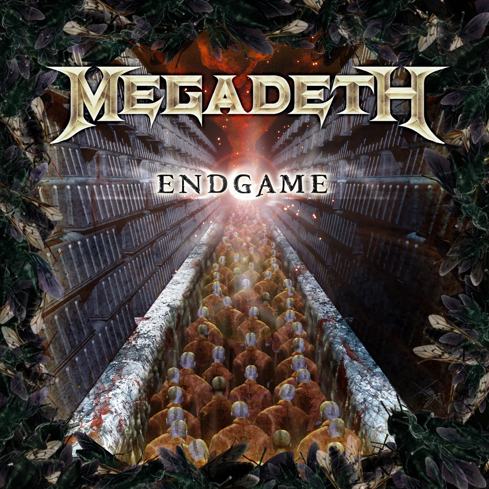
Endgame
Es el duodécimo álbum de estudio de Megadeth, lanzado el 15 de septiembre de 2009 por Roadrunner Records. Con la formación ya consolidada (Dave Mustaine, Glen Drover, Shawn Drover y James LoMenzo), Endgame es considerado por muchos fans como uno de los mejores discos de la etapa post-clásica de la banda. Producido nuevamente por Andy Sneap, el álbum muestra a Megadeth en excelente forma técnica y compositiva.
El sonido regresa con fuerza al thrash metal rápido y agresivo, con riffs complejos, cambios de tempo y solos brillantes. Temas destacados incluyen “Dialectic Chaos” (intro instrumental), “This Day We Fight!”, “44 Minutes”, “1,320'”, “Endgame” y la poderosa “Head Crusher” (que fue nominada al Grammy).
El álbum debutó en el puesto #9 del Billboard 200 y recibió excelentes críticas, siendo alabado como un regreso al Megadeth más veloz y técnico desde Rust in Peace.
Curiosidades del album:
- Mejor disco desde Rust in Peace: Muchos fans y críticos lo consideran el mejor trabajo de Megadeth desde 1990. Mustaine también lo ha mencionado varias veces como uno de sus favoritos de la era moderna.
- “44 Minutes”: La canción está basada en un hecho real: un tiroteo ocurrido en 1997 en North Hollywood (Los Ángeles), donde dos ladrones de bancos enfrentaron a la policía durante 44 minutos con armas de alto calibre.
- Último álbum con Glen Drover: El guitarrista Glen Drover dejó la banda poco después del lanzamiento para pasar más tiempo con su familia.
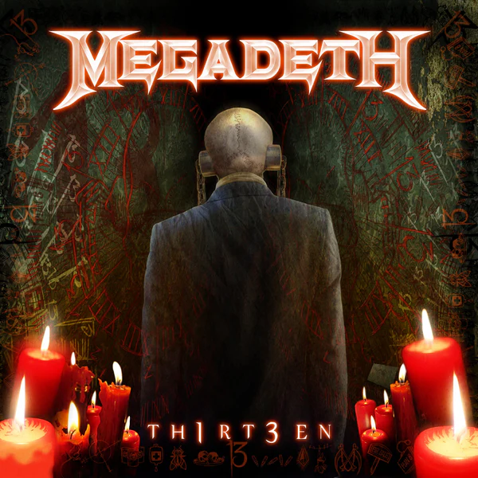
Th1rt3en
Es el decimotercer álbum de estudio de Megadeth, lanzado el 1 de noviembre de 2011 por Roadrunner Records. El disco marca el regreso de David Ellefson al bajo después de 8 años fuera de la banda. La formación en este álbum fue: Dave Mustaine (voz y guitarra), David Ellefson (bajo), Chris Broderick (guitarra) y Shawn Drover (batería). Chris Broderick, que había entrado en 2008, se consolidó aquí como uno de los guitarristas más técnicos de la historia de Megadeth.
Producido por Johnny K y Dave Mustaine, Th1rt3en combina thrash clásico con elementos melódicos y progresivos. El sonido es potente y moderno, aunque algo menos agresivo que Endgame. Temas destacados: “Sudden Death” (nominada al Grammy), “Public Enemy No. 1”, “Whose Life (Is It Anyways?)”, “We the People” y “New World Order” (versión regrabada y actualizada de una canción antigua).
El álbum debutó en el puesto #13 del Billboard 200 y recibió críticas generalmente positivas, aunque algunos fans lo consideraron un poco menos impactante que Endgame.
Curiosidades del album:
- Título “Th1rt3en”: Mustaine eligió el número 13 porque es su número de la suerte (nació un 13 de septiembre). Además, este era el álbum número 13 de la banda.
- “Sudden Death”: Fue compuesta originalmente para el videojuego Guitar Hero: Warriors of Rock. La versión del álbum es más pesada y completa.
- Regrabaciones: Incluye una versión actualizada de “New World Order”, canción que originalmente apareció en el EP Hidden Treasures (1995).
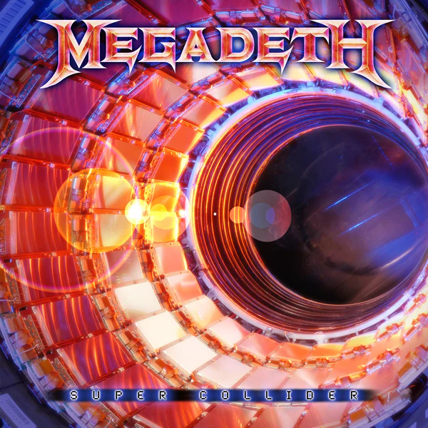
Super Collider
Es el decimocuarto álbum de estudio de Megadeth, lanzado el 4 de junio de 2013 por Tradecraft / Universal Music. Este disco es considerado por gran parte de los fans como uno de los más débiles de la discografía de Megadeth, junto a Risk. Fue grabado con la formación de Dave Mustaine, David Ellefson, Chris Broderick (guitarra) y Shawn Drover (batería), y producido por Dave Mustaine junto a Johnny K.
Musicalmente, Super Collider se inclinó hacia un sonido más hard rock y rock alternativo, con riffs más simples, tempos medios y coros muy melódicos, alejándose bastante del thrash técnico que muchos esperaban después de Endgame y Th1rt3en. Temas más conocidos: “Super Collider”, “Kingmaker”, “Off the Edge”, “Forget to Remember” y “Dance in the Rain”.
El álbum debutó en el puesto #6 del Billboard 200 (buena posición comercial), pero recibió críticas mixtas a negativas por parte de fans y prensa, que lo acusaron de ser demasiado suave y falto de agresividad.
Curiosidades del album:
- El álbum más criticado de la era moderna: Muchos fans lo consideran el punto más bajo de Megadeth desde Risk. Mustaine defendió el disco, pero años después admitió que no fue su mejor trabajo.
- “Kingmaker”: Fue el primer single y tiene un video con temática política y violenta.
- Problemas internos: Durante la gira de este álbum comenzaron las tensiones que llevarían a la salida de Chris Broderick y Shawn Drover en 2014.
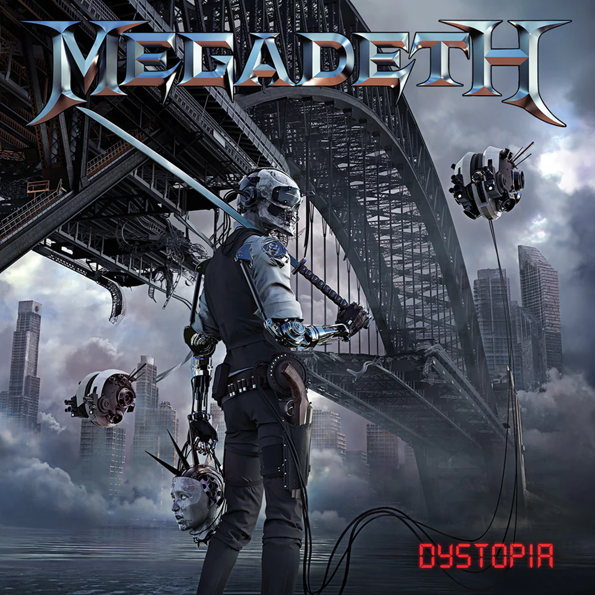
Dystopia
Es el decimoquinto álbum de estudio de Megadeth, lanzado el 26 de enero de 2016 por Tradecraft / Universal Music. Dystopia marca un fuerte regreso de la banda después del decepcionante Super Collider. Tras la salida de Chris Broderick y Shawn Drover en 2014, Dave Mustaine reformó la banda con nuevos integrantes: Kiko Loureiro (guitarra, ex-Angra) y Chris Adler (batería, ex-Lamb of God). David Ellefson permaneció en el bajo.
Producido por Dave Mustaine y Chris Rakestraw, el álbum vuelve con fuerza al thrash metal agresivo, técnico y veloz, con riffs afilados, solos brillantes de Kiko Loureiro y una batería potente. Temas destacados: “Dystopia”, “The Threat Is Real”, “Post-American World”, “Poisonous Shadows” y “Fatal Illusion”.
El disco fue muy bien recibido por fans y crítica, debutó en el puesto #3 del Billboard 200 (la mejor posición de Megadeth desde Youthanasia en 1994) y ganó el Grammy al Mejor Álbum de Metal en 2017, el primer Grammy de la banda en su carrera.
Curiosidades del album:
- Nuevo comienzo: Muchos lo consideran el mejor álbum de Megadeth desde Endgame (2009) o incluso desde la era clásica.
- Portada: Creada por Brent Elliott White. Muestra a Vic Rattlehead como un cyborg en un mundo distópico futurista, con una estética oscura y moderna.
- Letras: El álbum tiene un fuerte contenido político y social, criticando el control gubernamental, la vigilancia masiva y un futuro distópico.
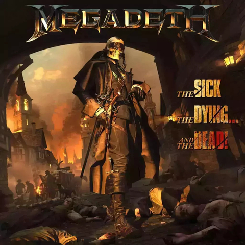
The Sick, the Dying... and the Dead!
Es el decimosexto álbum de estudio de Megadeth, lanzado el 2 de septiembre de 2022 por Tradecraft / Universal Music. Después de 6 años desde Dystopia, la banda regresó con su formación más estable en años: Dave Mustaine (voz y guitarra), Kiko Loureiro (guitarra), James LoMenzo (bajo) y Dirk Verbeuren (batería).
Producido por Dave Mustaine y Chris Rakestraw, el álbum es un regreso potente al thrash metal clásico, con riffs rápidos, cambios de tempo complejos, solos virtuosos y la característica voz agresiva de Mustaine. Temas destacados incluyen “We'll Be Back”, “Soldier On!”, “Night Stalkers” (con un verso de Ice-T), “The Sick, the Dying… and the Dead!”, “Psychopathy” y “Dogs of Chernobyl”.
El disco debutó en el puesto #3 del Billboard 200 y recibió excelentes críticas, siendo alabado como uno de los trabajos más sólidos y agresivos de Megadeth en la última década.
Curiosidades del album:
- Pandemia y retrasos: El álbum fue grabado durante la pandemia de COVID-19, lo que provocó varios retrasos en su lanzamiento (estaba originalmente planeado para 2021).
- Kiko Loureiro: Este fue su último álbum completo con Megadeth. Abandonó la banda en 2023 por motivos familiares y fue reemplazado por Teemu Mäntysaari.
- “Dogs of Chernobyl”: Una de las canciones más oscuras del disco, inspirada en el desastre nuclear de Chernóbil y sus consecuencias a largo plazo.
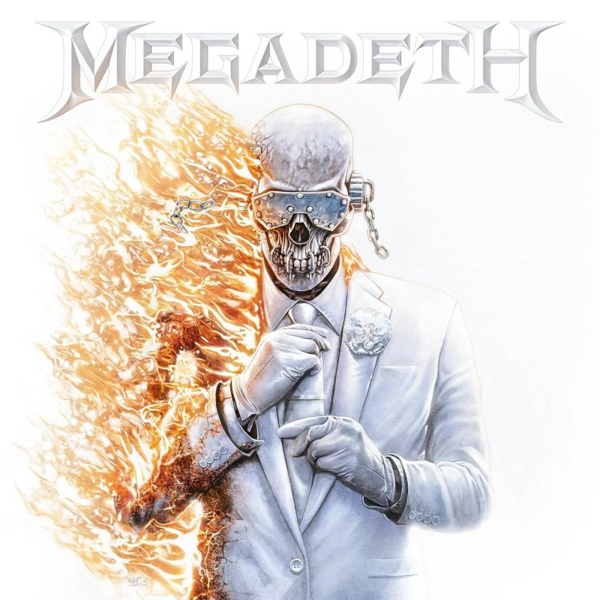
Megadeth
Es el decimoséptimo y último álbum de estudio de Megadeth, lanzado el 23 de enero de 2026. Se trata de un álbum autotitulado (self-titled), algo poco común en la banda. Dave Mustaine lo anunció como el disco final de la carrera de Megadeth, cerrando así más de 40 años de historia. Fue producido nuevamente por Dave Mustaine y Chris Rakestraw.
La formación en este álbum incluye a Teemu Mäntysaari en la guitarra (su único álbum con la banda), James LoMenzo en el bajo (regresando desde Endgame en 2009), Dirk Verbeuren en la batería y, por supuesto, Dave Mustaine en voz y guitarra principal.
Musicalmente, el disco combina thrash metal agresivo con momentos más melódicos y mid-tempo, sirviendo como una especie de resumen o cierre de la carrera de la banda. Incluye 10 canciones principales más un bonus track especial.
Curiosidades del album:
- Álbum final: Mustaine confirmó que este sería el último disco de estudio de Megadeth, seguido de una gira de despedida.
- Bonus track emotivo: Incluye una nueva versión de “Ride the Lightning”, canción que Dave Mustaine co-escribió originalmente para Metallica en 1983-1984, antes de ser expulsado de la banda. Es un cierre simbólico y personal muy fuerte.
- Portada: Muestra a Vic Rattlehead en llamas / quemándose, simbolizando el final incendiario de la banda.